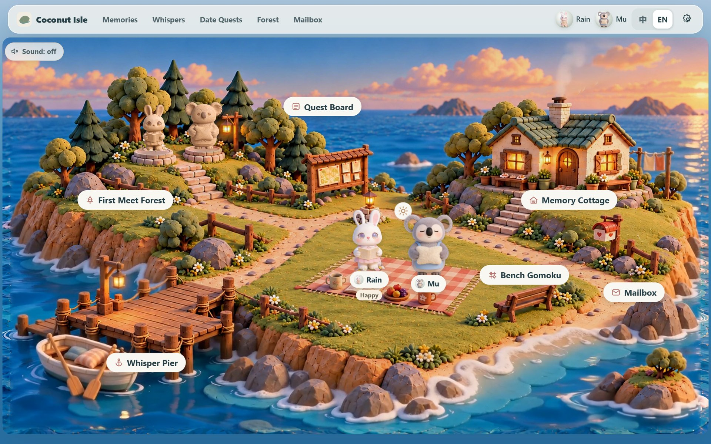

小岛首页The island
点一点，就能去岛上的任何地方Tap anywhere to visit
两个人的小动物站在野餐垫上。点自己的小动物可以设置心情（开心、委屈、需要空间），对方一眼就能看到，24 小时后自动回到平静。 Your two animals sit on a picnic mat. Tap your own to share a mood (happy, hurt, need space); your partner sees it at a glance, and it fades back to calm after 24 hours.